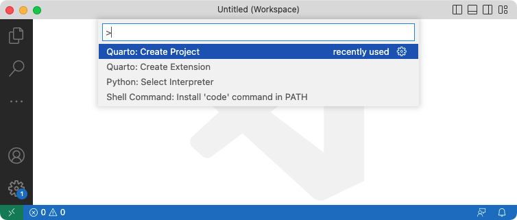
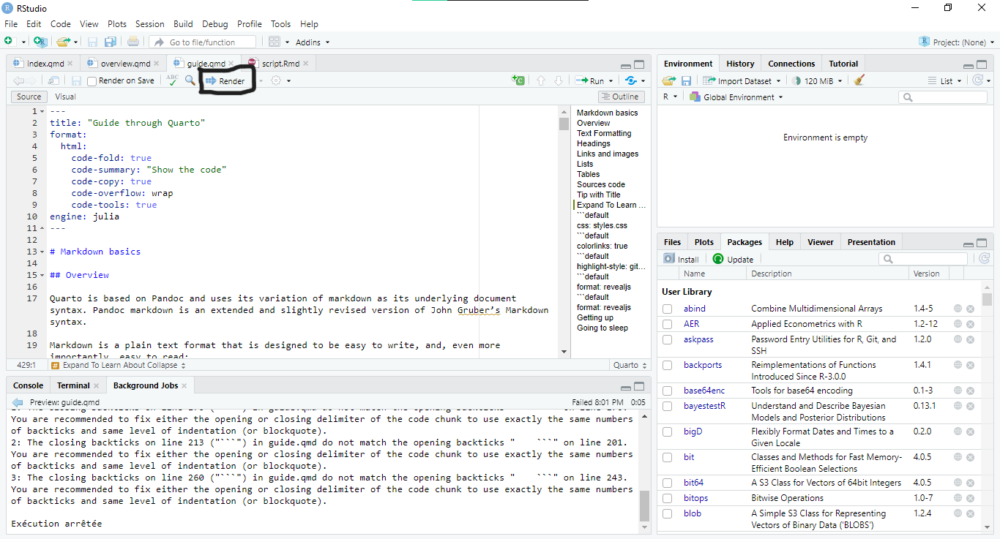

Show the code
1 + 12Quarto is based on Pandoc and uses its variation of markdown as its underlying document syntax. Pandoc markdown is an extended and slightly revised version of John Gruber’s Markdown syntax.
Markdown is a plain text format that is designed to be easy to write, and, even more importantly, easy to read:
A Markdown-formatted document should be publishable as-is, as plain text, without looking like it’s been marked up with tags or formatting instructions. – John Gruber
This document provides examples of the most commonly used markdown syntax. See the full documentation of Pandoc’s Markdown for more in-depth documentation.
| Markdown Syntax | Output |
|---|---|
*italics*, **bold**, ***bold italics*** |
italics, bold, bold italics |
superscript^2^ / subscript~2~ |
superscript2 / subscript2 |
~~strikethrough~~ |
|
`verbatim code` |
verbatim code |
| Markdown Syntax | Output |
|---|---|
# Header 1 |
Header 1 |
## Header 2 |
Header 2 |
### Header 3 |
Header 3 |
#### Header 4 |
Header 4 |
##### Header 5 |
Header 5 |
###### Header 6 |
Header 6 |
| Markdown Syntax | Output |
|---|---|
<https://quarto.org> |
https://quarto.org |
[Quarto](https://quarto.org) |
Quarto |
 |
|
[](https://quarto.org) |
|
[{fig-alt="A cool panda image"}](https://quarto.org) |
Markdown Syntax
| Right | Left | Default | Center |
|------:|:-----|---------|:------:|
| 12 | 12 | 12 | 12 |
| 123 | 123 | 123 | 123 |
| 1 | 1 | 1 | 1 |Output
| Right | Left | Default | Center |
|---|---|---|---|
| 12 | 12 | 12 | 12 |
| 123 | 123 | 123 | 123 |
| 1 | 1 | 1 | 1 |
Code are inserted in Quarto mainly like in Rmarkdown. One major difference is the fact that it is possible to add a simple snippet of code in Quarto like by using simple three quotes: ```default
Markdown syntax
```default
Code here
```Output
Code hereNotice that we wrote default. That is used for a language that is not supported by Quarto directly, and without that default, it will considered as a code snippet:
Markdown syntax
```
Code here
```Output
Code hereFor a supported language, we use the following:
Markdown syntax
```{.language-name}
code
```For example:
```{.python}
1 + 1
``` 1 + 1This is still a code snippet.
To insert a code that is supposed to run, we remove the . in the brackets:
For example:
1 + 12Use $ delimiters for inline math and $$ delimiters for display math. For example:
| Markdown Syntax | Output |
|---|---|
inline math: $E = mc^{2}$ |
inline math: \(E = mc^{2}\) |
display math: $$E = mc^{2}$$ |
display math: \[E = mc^{2}\] |
Quarto has native support for embedding Mermaid and Graphviz diagrams. This enables you to create flowcharts, sequence diagrams, state diagrams, gantt charts, and more using a plain text syntax inspired by markdown.
Example:
Markdown syntax
```{mermaid}
flowchart LR
A[Hard edge] --> B(Round edge)
B --> C{Decision}
C --> D[Result one]
C --> E[Result two]
```Output
flowchart LR
A[Hard edge] --> B(Round edge)
B --> C{Decision}
C --> D[Result one]
C --> E[Result two]
Mermaid is a Javascript based diagramming and charting tool that uses Markdown-inspired text definitions and a renderer to create and modify complex diagrams.
Mermaid diagrams use %% as their comment syntax, and so cell options are declared using %%|. Cell options must be included directly beneath the start of the diagram code chunk.
Above we demonstrated a flowchart created with Mermaid, here is a sequence diagram (also embedded using a {mermaid} executable cell):
```{mermaid}
sequenceDiagram
participant Alice
participant Bob
Alice->>John: Hello John, how are you?
loop Healthcheck
John->>John: Fight against hypochondria
end
Note right of John: Rational thoughts <br/>prevail!
John-->>Alice: Great!
John->>Bob: How about you?
Bob-->>John: Jolly good!
```sequenceDiagram
participant Alice
participant Bob
Alice->>John: Hello John, how are you?
loop Healthcheck
John->>John: Fight against hypochondria
end
Note right of John: Rational thoughts <br/>prevail!
John-->>Alice: Great!
John->>Bob: How about you?
Bob-->>John: Jolly good!
The Graphviz layout programs take descriptions of graphs in a simple text language, and make diagrams in useful formats. Graphviz has many useful features for concrete diagrams, such as options for colors, fonts, tabular node layouts, line styles, hyperlinks, and custom shapes.
Graphviz diagrams use // as their comment syntax, and so cell options are declared using //|. Cell options must be included directly beneath the start of the diagram code chunk.
For example, here is a simple undirected graph created using graphviz:
::: {#fig-simple}
```{dot}
graph G {
layout=neato
run -- intr;
intr -- runbl;
runbl -- run;
run -- kernel;
kernel -- zombie;
kernel -- sleep;
kernel -- runmem;
sleep -- swap;
swap -- runswap;
runswap -- new;
runswap -- runmem;
new -- runmem;
sleep -- runmem;
}
```
This is a simple graph with Graphviz
:::You can embed videos in documents using the video shortcode. For example, here we embed a YouTube video
Here is an example:
It is possible to embed .qmd and .ipynb files into a Quarto document. Here, you can see examples of it. For HTML outputs, it is possible to embed .pdf files too.
Here is an example:
Callouts are an excellent way to draw extra attention to certain concepts, or to more clearly indicate that certain content is supplemental or applicable to only some scenarios.
There are five different types of callouts available.
The color and icon will be different depending upon the type that you select. Here are what the various types look like in HTML output:
Note that there are five types of callouts, including: note, warning, important, tip, and caution.
This is an example of a callout with a title.
This is an example of a ‘folded’ caution callout that can be expanded by the user. You can use collapse="true" to collapse it by default or collapse="false" to make a collapsible callout that is expanded by default.
::: {.callout-note}
Note that there are five types of callouts, including:
`note`, `warning`, `important`, `tip`, and `caution`.
:::
::: {.callout-tip}
## Tip with Title
This is an example of a callout with a title.
:::
::: {.callout-caution collapse="true"}
## Expand To Learn About Collapse
This is an example of a 'folded' caution callout that can be expanded by the user. You can use `collapse="true"` to collapse it by default or `collapse="false"` to make a collapsible callout that is expanded by default.
:::You can create ‘folded’ callouts that can be expanded by the user by settings the collapse attribute on the callout. If you set collapse=true, the callout will be expandable, but will be collapsed by default. If you set collapse=false, the callout will be expandable, but will be expanded by default.
Callouts have 3 different looks you can use.
default |
The default appearance with colored header and an icon. |
simple |
A lighter weight appearance that doesn’t include a colored header background. |
minimal |
A minimal treatment that applies borders to the callout, but doesn’t include a header background color or icon. |
Please refer to the quarto website for more information.
As an example, we will try KNN on a quarto document:
import matplotlib.pyplot as plt
x = [4, 5, 10, 4, 3, 11, 14 , 8, 10, 12]
y = [21, 19, 24, 17, 16, 25, 24, 22, 21, 21]
classes = [0, 0, 1, 0, 0, 1, 1, 0, 1, 1]
plt.scatter(x, y, c=classes)
plt.show()from sklearn.neighbors import KNeighborsClassifier
data = list(zip(x, y))
knn = KNeighborsClassifier(n_neighbors=5)
knn.fit(data, classes)KNeighborsClassifier()In a Jupyter environment, please rerun this cell to show the HTML representation or trust the notebook.
KNeighborsClassifier()
new_x = 8
new_y = 21
new_point = [(new_x, new_y)]
prediction = knn.predict(new_point)
plt.scatter(x + [new_x], y + [new_y], c=classes + [prediction[0]])
plt.text(x=new_x-1.7, y=new_y-0.7, s=f"new point, class: {prediction[0]}")
plt.show()Please refer to quarto website for more.
Here is a sample code:
using GLMakie, SGtSNEpi, SNAPDatasets
GLMakie.activate!()
g = loadsnap(:as_caida)
y = sgtsnepi(g);
show_embedding(y;
A = adjacency_matrix(g), # show edges on embedding
mrk_size = 1, # control node sizes
lwd_in = 0.01, lwd_out = 0.001, # control edge widths
edge_alpha = 0.03 ) # control edge transparencyPlease refer to quarto website for more.
Here is a sample code:
Plot.rectY(filtered,
Plot.binX(
{y: "count"},
{x: "body_mass_g", fill: "species", thresholds: 20}
))
.plot({
facet: {
data: filtered,
x: "sex",
y: "species",
marginRight: 80
},
marks: [
Plot.frame(),
]
}
)Please refer to quarto website for more.
With Quarto, we can create a wide range of different file formats. Here, we are going to talk about the most important ones.
| HTML | Example of html generation |
| Example of pdf generation | |
| MS Word | Example of MS Word generation |
| Markdown | Example of Markdown generation |
| Typst | Example of Typst generation |
Use the html format to create HTML output. For example:
---
title: "My document"
format:
html:
toc: true
html-math-method: katex
css: styles.css
---We’ve already through how we generate HTML file with Quarto. Now, let’s see how to publish the generated file
The quarto publish command provides a straightforward way to publish documents to Quarto Pub, GitHub Pages, Netlify, and Posit Connect.
For example, here are the commands to publish document.qmd to each of these services:
quarto publish quarto-pub document.qmd
quarto publish gh-pages document.qmd
quarto publish netlify document.qmd
quarto publish connect document.qmdThe YAML heading of Quarto PDF files are almost similar to Rmarkdown PDF files. The base syntax remains unchanged.
Use the pdf format to create PDF output. For example:
---
title: "My document"
format:
pdf:
toc: true
number-sections: true
colorlinks: true
---In order to create PDFs you will need to install a recent distribution of TeX. We recommend the use of TinyTeX (which is based on TexLive), which you can install with the following command:
quarto install tinytexQuarto uses KOMA Script document classes by default for PDF documents and books. KOMA-Script classes are drop-in replacements for the standard classes with an emphasis on typography and versatility.
For PDF documents this results in the following Pandoc options set by default:
title: "My document"
format:
pdf:
toc: true
number-sections: true
colorlinks: true
documentclass: scrartcl
papersize: letterYou can set documentclass to the standard article, report or book classes, to the KOMA Script equivalents scrartcl, scrreprt, and scrbook respectively, or to any other class made available by LaTeX packages you have installed.
Setting your documentclass to either book or scrbook will automatically handle many of the common needs for printing and binding PDFs into a physical book (i.e., chapters start on odd pages, alternating margin sizes, etc).
The YAML heading and base syntax are generally the same as Rmarkdown
Use the docx format to create MS Word output. For example:
---
title: "My Document"
format:
docx:
toc: true
number-sections: true
highlight-style: github
---Quarto supports a variety of formats for creating presentations, including:
| revealjs | reveal.js (HTML) |
| pptx | PowerPoint (MS Office) |
| beamer | Beamer (LaTeX/PDF) |
There are pros and cons to each of these formats. The most capable format by far is revealjs, so it is highly recommended unless you have specific Office or LaTeX output requirements. Note that revealjs presentations can be presented as HTML slides or can be printed to PDF for easier distribution.
PowerPoint and beamer generation are similar to what is done in Rmarkdown.
You can create Revealjs presentations using the revealjs format.
---
title: "My document"
author: "Guerzoniansu"
format: revealjs
------
title: "My document"
author: "Guerzoniansu"
format: revealjs
---
## Getting up
- Turn off alarm
- Get out of bed
## Going to sleep
- Get in bed
- Count sheepThis feature is new in Quarto 1.4. Download the latest version of Quarto at the download page
Quarto Dashboards make it easy to create interactive dashboards using Python, R, Julia, and Observable:
Publish a group of related data visualizations as a dashboard. Use a wide variety of components including Plotly, Leaflet, Jupyter Widgets, htmlwidgets; static graphics (Matplotlib, Seaborn, ggplot2, etc.); tabular data; value boxes; and text annotations.
Flexible and easy to specify row and column-based Layouts. Components are intelligently re-sized to fill the browser and adapted for display on mobile devices.
Author using any notebook editor (JupyterLab, etc.) or in plain text markdown with any text editor (VS Code, RStudio, Neovim, etc.)
Dashboards can be deployed as static web pages (no special server required) or you can optionally integrate a backend Shiny Server for enhanced interactivity.
You can create highly customized layouts and use a wide variety of dashboard themes. Please refer to the dashboard examples page on Quarto Guide
Learning to make Dashboards in Quarto can be pretty complex. So here are steps, you could follow to improve quickly
Here is the link.
Start by learning how to lay out your dashboard and populate it with content:
Dashboard Layout shows you how to control the navigation bar, and how to arrange your content across pages, rows, columns, tabsets, and cards.
Data Display shows you how to display data in your dashboard as plots, tables, value boxes, and text.
Once you’ve mastered the basics, check out these additional articles to learn more.
We will discuss about websites only but know books are created the exact way websites are made in editors.
First, you need to choose a text editor. In the following, we will tell the steps to create a quarto website project in VS Code.
To create a new website project within VS Code, execute the Quarto: Create Project command from the command-palette:

Then, select Website Project:

You’ll be prompted to select a parent directory to create the project within. Then, you’ll be asked to name the directory for your website project:

The new website project will be created and opened within VS Code. Click the Render button to preview the website:

Now navigate through this site for more informations…
To render documents, there are several ways.
On R:
To render the document, we click on the render button. 
To preview the document, we click on the visual button
On other editors:
We need to run these on the terminal:
quarto preview (for preview)
quarto render (for render)Now, fell free to see our work and all the code in the projects tab